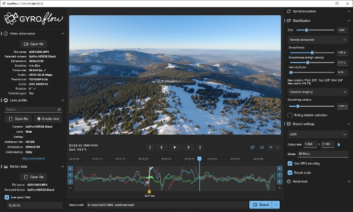
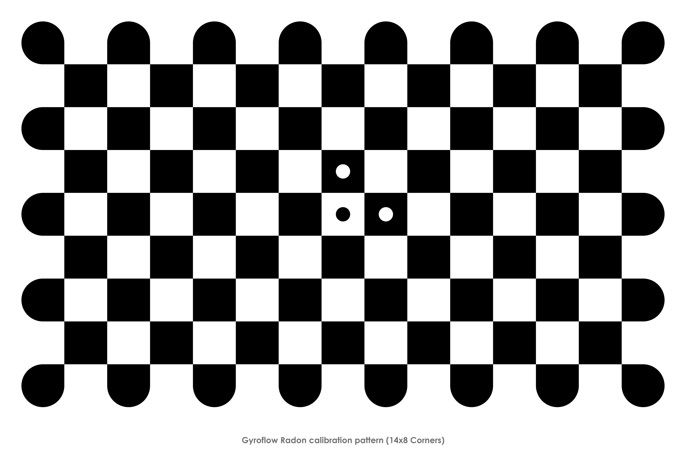

用了一年 Gyroflow，运动相机的稳定工作流让我真正省了心
从当初嫌标定麻烦到现在把它当成后期管线的固定一环，聊聊这款运动相机稳定软件在我手上一年里的变化——哪些地方越用越顺，哪些坑踩了又踩。
装 Gyroflow 到现在快一年了，当初从官方下载拿的安装包，从 1.5 版本一路更到最近的 1.8。当初装它是因为运动相机拍出来的画面晃得实在没法看，朋友推荐说这软件能用上相机内置的陀螺数据做物理级稳定，比普通防抖滤镜靠谱得多。在gyroflow官网上翻了几页功能介绍就决定试试。
越用越顺手的那几件事
第一次用的时候，光做镜头标定就花了我快半小时——录一段标定视频、等它分析、确认参数，我当时心想这也太折腾了，不就是个防抖吗。但现在这套流程我闭着眼都能走完：打开标定工具、对着棋盘格晃十秒、保存档案。而且标定一次之后，只要传感器没变、画幅比例一样，4K 的档案直接就能套给 1080p 素材，不用重新来。我那台旧 GoPro 的标定档案存了快一年，每次新素材直接加载参数就行。

最让我惊喜的是它和剪辑软件的配合。我用 DaVinci Resolve，Gyroflow 装个 OpenFX 插件就能直接在调色页里挂特效，免转码、免导出中间文件——这一条把我以前用其他稳定器时反复导出代理文件的时间全省了。FCPX 用户走的是项目导入路线，Adobe 阵营走的是自家特效插件，四个接入方式覆盖下来基本没有死角。
导出队列也是用了才离不开的东西。以前导完一段素材再手动点下一个，现在把所有片段拖进队列、设置好编码和码率、点开始就可以去做别的了。H.264 兼容性最好直接发朋友圈，进后期调色调 ProRes，机器在后台排着跑完全不用盯。
越用越烦的那些坑
说个反直觉的——版本更新偶尔会让我重新摸一遍某些参数。最近有一次更新后，我之前调好的 smoothness 值在新导出里看起来完全不一样，花了十几分钟才发现是新版本改了默认算法的权重。好在 Gyroflow 有设置预设功能，我现在把每次调出来的稳定参数都存成预设文件，更新后加载一下就能恢复，不用从头调。
标定这件事说回来还是麻烦。内置档案库虽然覆盖了 GoPro、DJI、Insta360 这些主流机型，但搜不到的时候得自己录一段标定视频做分析，具体步骤我后来翻了gyroflow文档才捋清楚——我手里那台 RunCam FPV 相机每次用都得走一遍这个流程。而且手机外挂陀螺记录的方案，手机采样率不够的话数据精度还会打折扣——官方最低要求 50Hz，我那台老安卓偶尔会掉到 30Hz 以下，同步完之后画面还是有轻微抖动。

还有个小问题是编码格式选择上的纠结。七种输出编码摆出来，H.264 兼容但 10bit 素材会塌到 8bit，H.265 画质好但老设备播不了，ProRes 进后期首选但文件巨大。我到现在每次导出前还是要犹豫一下选哪个，不像其他参数那样有个固定的 go-to 选择。
哪个功能成了每天离不开的
外接陀螺同步这个功能，我当初没想到会用得这么频繁。去年冬天拍了一段滑雪视频，GoPro 绑在头盔上陀螺数据记录不全，把手机也绑上去补了一份数据源，用 Gyroflow 的外接同步功能拼在一起，稳定效果居然和完整数据没差多少。从此以后只要相机本身陀螺数据不够用，我就会带个手机当备份记录仪，这个功能成了我出门拍运动画面时的标配。
反过来，手机版我倒是几乎没再用过。它的定位是当陀螺记录仪和做轻量稳定，但桌面端能做的事太多了——镜头标定、同步精修、渲染队列、高码率导出，手机上那点轻处理反而显得多余。我试过一次用手机版直接稳定 GoPro 素材，效果和桌面端比差了不止一个档次。
长期用下来的观感修正
当初装它的时候，我以为 Gyroflow 就是个"给运动相机做防抖"的小工具，定位和 AE 里的 Warp Stabilizer 差不多。用了一年才发现它其实是个独立的后期管线入口——从镜头标定这个底层参数开始，到陀螺数据同步、帧间稳定、编码导出，甚至直接对接进剪辑软件的时间线，整个流程它都管了。这种"从源头就把画面校正好"的思路，比后期套个滤镜靠谱太多。
当初我还担心过会不会太复杂学不会，毕竟看文档的时候光稳定质量三要素就讲了好几页。但实际用下来发现，日常 80% 的素材直接加载内置档案、点两下就能出片，只有剩下 20% 的特殊情况才需要手动调参数。学习曲线看着陡，日常使用其实很平滑。
去留结论
短时间内不会卸载。它已经成了我运动相机后期工作流里固定的一环——每次拍完素材先过 Gyroflow 稳定再进剪辑软件，这套流程跑顺了就不想再换。
但我也在想，如果哪天出现一个更轻量的替代品，能把日常那 80% 的素材稳定到差不多的效果、不需要标定流程、直接丢给它就完事，我可能会分流一部分素材过去。Gyroflow 功能全、上限高，但标定和参数调优的成本确实在。目前还没看到这样的替代品，继续用着。这套开源工具的文档资料同步放在 GitHub、Gitee 和 GitCode 三个仓库，不同网络环境下都能访问。